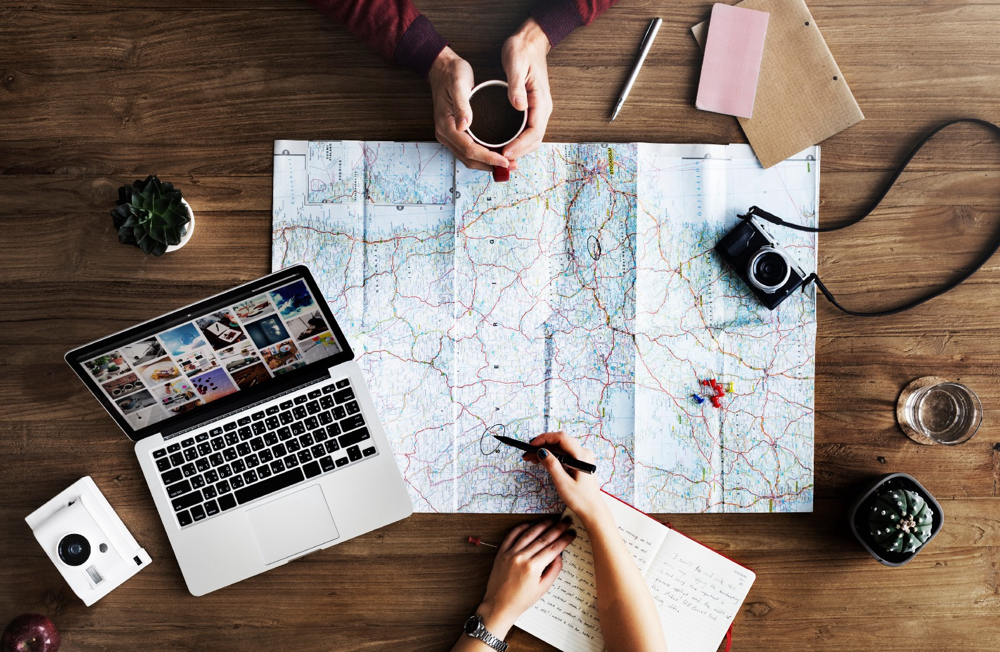

Return

DEC 14, 2020 AT 7:55 PM
SHARE
LIKE
Digital Nomad
Digital nomads are people who use telecommunications technologies to earn a living and, more generally, conduct their life in a nomadic manner. Such workers often work remotely from foreign countries, coffee shops, public libraries, co-working spaces, or recreational vehicles. This is often accomplished through the use of devices that have wireless Internet capabilities such as smartphones or mobile hotspots. Successful digital nomads typically have a financial cushion or need to develop high levels of self-reliance and self-discipline.

Although digital nomads enjoy advantages in freedom and flexibility, they report loneliness as their biggest struggle, followed by burnout. This lifestyle may present other challenges as well such as maintaining international health insurance with coverage globally, abiding by different local laws, and sometimes obtaining work visas.
The digital nomad lifestyle has become significantly more popular in recent years due to a number of factors. Internet connectivity becoming more widespread, even to rural areas, has helped people travel to more areas (digital nomad or otherwise). Jobs becoming less location-dependent (such as graphic designers and writers) has also contributed to the ease of the digital nomad lifestyle. There are some negative factors that cause people to become digital nomads. These include political unrest in their home countries, a high cost of living where they live, the diminishing of long-term employment, and more.
The importance of developing face-to-face quality relationships has been stressed to maintain mental health in remote workers.
As commented above, feelings of loneliness are often present in the practice of nomadic occupations, since nomadism often requires freedom from personal attachments such as marriage. The importance of developing face-to-face quality relationships has been stressed to maintain mental health in remote workers. The need for intimacy and family life may be a motive to undertake digital nomadism as an intermittent or temporary activity as in the case of entrepreneur and business developer Sol Orwell.Traveling as a digital nomad couple is a relatively infrequent option whose advantages and disadvantages are a discussed subject. The individual and/or entrepreneurial fulfillment of both members of a digital nomad couple seems a complex goal but may offer synergistic expectations. Iconic examples of stable, professionally viable digital nomad couples could be those of Diana Southern Norman and Ian Norman, who have jointly developed a career in astrophotography, Brent Hartinger(writer) and Michael Jensen(editor), and Naomi and Elia Locardi, who -continuously since 2012 until pandemic times- sustained themselves as a nomadic, travel/landscape photography team. Other known digital nomadic couples have been featured online.
Source: Wikipedia
Show all comments